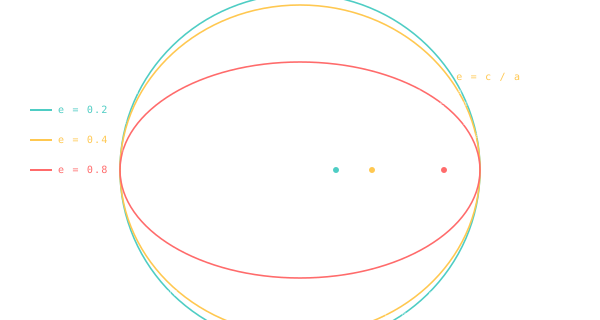

Eccentricity
How stretched the orbit is — zero is a perfect circle, one is a parabolic escape.

101 · zoom in
If size is the orbit's first knob, eccentricity is the second. Pick a number from 0 to almost-1. At 0 the orbit is a perfect circle — boring, predictable, same speed everywhere. Push it toward 1 and the ellipse stretches into a long egg, then a cigar, then almost a straight line.
What changes physically? Speed. A circular orbit is calm. A stretched one is not. The body rips past the close end of the ellipse and then loiters out at the far end for most of the orbit. Halley's Comet is in here for less than a year out of every 76 — the rest of the time it's drifting around aphelion at a crawl. Same orbit, wildly different pace.
Real planets are way more boring than comets — almost everything you'll see in /explore has eccentricity below 0.1. But the moment you start designing a mission trajectory, you're picking transfer ellipses with eccentricity all over the place. Hohmann transfers to Mars sit around 0.21. The Apollo TLI burn put the spacecraft on an ellipse with e ≈ 0.97 — almost an escape.
Eccentricity (`e`) is the shape number. Set it to 0 and you have a circle — the foci collapse onto a single centre, and the orbiting body stays at the same distance forever. Crank it up toward 1 and the ellipse stretches into a cigar — the body whips past the focus at perihelion, then loiters out at aphelion for most of the orbit.
Above `e = 1` you're no longer bound. `e = 1` exactly is a parabolic trajectory (escape, just barely). Anything higher is hyperbolic — a flyby that never returns. Most spacecraft trajectories Orrery shows are heliocentric ellipses with `e < 1`. The exception: gravity-assist arms drawn around Jupiter or Saturn dip into hyperbolic territory.
Real planets cluster at low eccentricity. Earth: 0.0167 — almost circular. Mars: 0.093 — visibly elongated. Mercury: 0.205 — most eccentric of the eight planets. Pluto and the comets sit much higher, which is why their visits to perihelion are the show-stopping events of the outer solar system.
SEE IN THE APP
- /explore Each planet panel reports its eccentricity, e = 0 to ~0.25